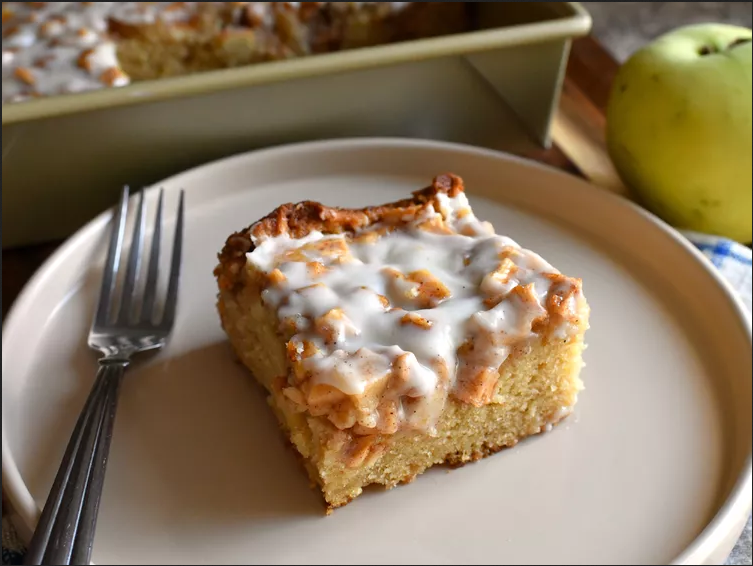

Apple Fritter Cake

Delicious Apple Fritter Cake Topped With Vanilla Icing
This apple fritter cake was inspired by the delicious flavor of a warm, cinnamon apple fritter.
The lightly spiced cake batter is baked with plenty of chopped tart apple on top, and then finished with vanilla icing.
Serve warm for best flavor and texture.
Ingredients
- 1 cup unsalted butter, plus more for greasing the pan
- 4 1/2 cups peeled, cored, and finely chopped tart apples
- 1 tablespoon lemon juice
- 1 cup firmly packed light brown sugar, divided
- 1 1/2 teaspoons ground cinnamon, divided
- 3/4 cup white sugar
- 1 teaspoon salt
- 1/2 teaspoon ground nutmeg
- 3 large eggs, at room temperature
- 2 teaspoons vanilla extract
- 1 cup full fat sour cream, at room temperature
- 1/3 cup apple cider
- 2 cups all-purpose flour
- 1 teaspoon baking powder
- 1/4 teaspoon baking soda
Icing
- 1 cup confectioner's sugar
- 1 pinch salt
- 1/4 teaspoon vanilla extract
- 5 tablespoons heavy cream, or as needed